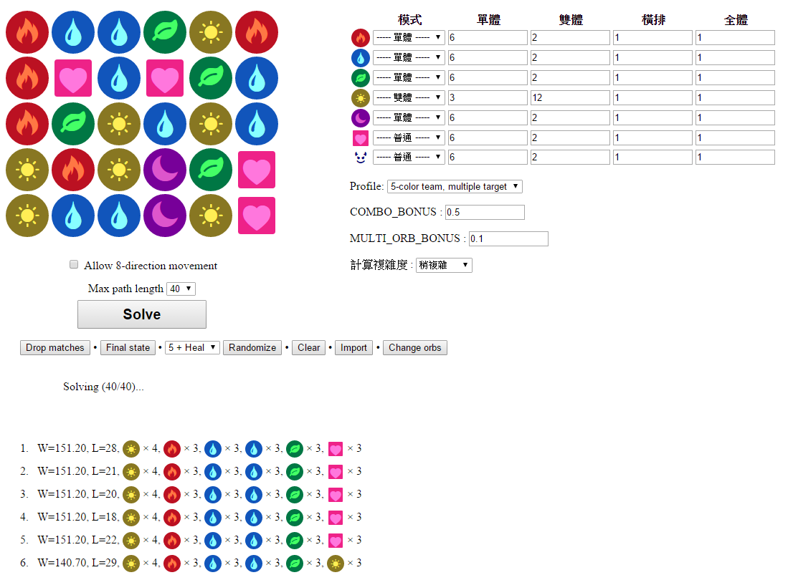

pndopt --- Puzzle & Dragons Optimizer

pndopt is a Javascript application to find an optimal path leading to a high-combo move in Puzzle & Dragons.
Only use it in emergency ☺!
(Yes I knew there were Big Combo and Path & Decision, but the former is gone and I'm unsatisfied with the result of the latter.)
Usage
- Left or right click on an orb to select its type.
- Click "Solve" after completing the board.
- Choose one solution and see how it is performed.
Requirements
- Firefox (version 19 or above).
- Screen resolution of 1280×800 or above.
It may work in other configurations but I don't guarantee it will work ☺.
TODO
- Introduce better solver (e.g. this post). Currently it is just a brute-force greedy algorithm, which may not produce truly optimal result.
- Resolve overlapping lines and points.
- Simulate swapping and matching when playing the animation.
- The default weight of the profiles may need to be adjusted.